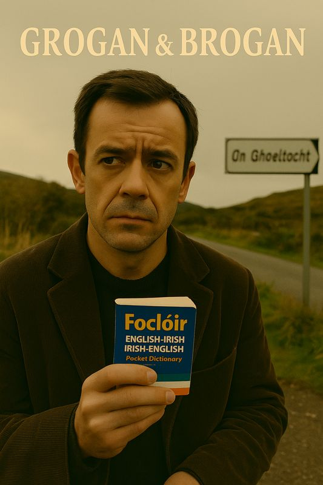

How I Met Brogan
Posted on 29 May 2025
Memories of Brogan...
🶠How I Met Brogan by Grogan
I first met Brogan in a translation booth in Luxembourg. Yes — you read that right. Not at a pub session, not on a windswept Kerry road, not in the cell of a revolutionary monastery — but in a sterile European Union conference room where they were arguing about pig subsidies in seventeen languages.
He leaned into his microphone and whispered, “This place needs a bodhrán.”
I didn’t laugh. I wrote it down. That was the first line of the first song we ever wrote together. It was never released. We called it “Ballad of the Bureaucrat’s Pig.”
Brogan believed poetry belonged in places that didn’t want it. On roundabouts. In footnotes. In the gaps between tired words and missed chances. I think that’s why we got along.
We came from opposite ends of the same bog:
He — musical instinct incarnate. A man who could coax melody from a radiator pipe and claimed his earliest
influence was the sound of rain on a caravan roof.
Me — a compulsive scribbler. Raised on mass cards and protest songs, obsessed with rhyme, meter, myth, and
mistakes.
Together, we wrote. Songs about emigrants and eccentrics. Donkeys and industrial schoolboys. Priests who saw visions and women who saw through us. Some songs made people laugh. Some made them weep. A few did both in the same verse.
We bickered, of course. He liked first takes. I liked revisions. He believed in chaos; I believed in craftsmanship. But the music found a way through. Always.
Then one day, he disappeared.
Not like in a dramatic movie. No farewell note. No tragic accident. Just... gone. His fiddle left behind. His boots still muddy. A cupboard full of scribbled half-verses and jars of pickled beets he insisted were good for “melodic tone.”
For a while, I thought he’d faked his own death for publicity. Then I thought he’d gone feral and was living off-grid in Donegal, collaborating with seals. I still think that might be true.
In the years since, I’ve kept writing. But the songs come differently now. Slower. More haunted. Like they’re trying to tell me something he forgot to say.
Recently, I opened the old suitcase where we kept our lyrics — the Grogan & Brogan Songwriting Stash. Dozens of them. Some complete, some half-born, others written in languages neither of us spoke.
And I thought: I can’t let this vanish.
I’m nearly fifty. Too old for delusions, too young to give up. I want to publish the songs. Record them. Tour them across Ireland, Europe, and Africa — every place we ever dreamed aloud. Not for fame. Not even for closure.
For Brogan.
For the boy who opened his lunchbox to find a rodent and inspired a ballad.
For the girl who heard “Roses and PoitÃn†and laughed through her tears.
For Rainbow the donkey, who brayed on key.
For the songs that keep arriving, unbidden and beautiful, like drunken angels.
If you see Brogan — tell him the music’s waiting.
Tell him I kept his boots.
And tell him the gigs are starting soon.
Read moreSongs from the Stash — The Tour Begins
Posted on May 29, 2025
“Somewhere in a suitcase under my stairs, Brogan’s spirit was waiting.†I never meant to go back on the road...

But something started stirring this year — a sense that time was no longer patient. That the songs Brogan and I wrote — scribbled on receipts, beer mats, and prayer cards — weren’t just memories. They were blueprints. Prophecies. Ghosts.
So I opened the suitcase.
Inside?
The Grogan & Brogan stash.
Forty-seven songs we never released.
Twelve we only ever sang to donkeys.
Five written during a blackout in Ballymahone.
And one we swore we’d only perform “if the world started falling apart.”
Well… here we are.
🶠What Is Songs from the Stash?
It’s not a greatest hits tour — because the world never gave us hits.
It’s not a comeback tour — because technically, we never went.
It’s a celebration. Of exile, devotion, satire, and survival. Of stories that had no place until now. Of the absent presence of Brogan, wherever he is.
Each night, I’ll open the suitcase and choose from:
- “Sleep Well Lads†— a lullaby for lost boys.
- “Rodent in the Lunchbox†— a spoken-word scandal.
- “The Drunken Paddy Reincarnated†— the gospel of glorious defiance.
- “The Emigrant’s Regret†— love lost in the cold streets of Amerikay.
- “Roses and PoitÃn†— a waltz for doomed romantics.
And new songs — written for this tour, from the edge of fifty.
There’ll be stories. Laughter. Silences you can feel. Maybe even a guest appearance from Rainbow the Donkey (if she cooperates).
📠Where Are We Going?
Everywhere we weren’t invited to in the first place:
- Rural halls in Mayo, Cork, and Donegal
- Community theatres in Luxembourg, Berlin, and Brussels
- Courtyards in Cape Town and Harare
- A poetry shed in Kilfenora
- And a donkey sanctuary that’s “reviewing our request”
💬 Why Now?
Because I’m nearly fifty.
Because the songs are ready.
Because Brogan would never forgive me if I didn’t.
🛠Want Us in Your Town?
Got a pub, parish hall, or potato field?
Email: bookgrogan@groganandbrogan.ie
We travel light. One mic, one guitar, one suitcase. And maybe a donkey.
🟠First Dates Announced:
- 📅 Ballymahone Fair — June 20
- 📅 Galway Courthouse (Yes, the real one) — June 23
- 📅 A Shed Behind a Lidl in Luxembourg — June 30
- 📅 Whelan’s, Dublin — July 5
- 📅 Special Live Recording in Donegal — July 10 (Donkey access TBC)
“We made these songs to last. Now we’ll see if they can walk.”Read more
— Grogan
Lads, Legends, and Lamentations: The Women of Grogan & Brogan
Posted on 29 May 2025
Behind every Grogan or Brogan lies a woman with a sharper tongue, a better plan, or at the very least, a bottle of poitÃn labelled “for pain.”

🶠Lads, Legends, and Lamentations: The Women of Grogan & Brogan
While Grogan stumbles through misty fields and Brogan loses bets involving donkeys and mushy peas, it’s the women in their world who carry the true poetry — fierce, funny, and fearsomely independent.
Take the red-haired woman at the fair in Roses and PoitÃn. She marches through Ballymahone like a banshee on a mission, lectures the poitÃn vendor, critiques donkey sculpture, and demolishes Grogan’s courtship verse with the line: “Then pray to the Holy Mother you don’t throw up on my shoes.†Iconic.
Or consider the widow in Handsome Devil, seduced by a fiddler with sad eyes and velvet trousers. When he vanishes, it’s not her furniture he’s taken — it’s her heart. Her final line, spoken from her deathbed, could silence any room: “I am still looking for the interstice between reality and dream.”
Then there’s the unnamed woman in The Lonely Washerwoman — a tragic ballad of love, betrayal, and terrible domestic timing. She does what Grogan and Brogan often don’t: takes action. It’s misguided, it’s awful, and yet it’s deeply human.
And of course, we have Margaret and Maureen — the indomitable voices of the Epistolary Suite. Margaret, the poetic penpal with a flair for fantasy. Maureen, the long-suffering wife with zero patience for nonsense and a talent for fire-breathing replies.
These women aren’t just muses or plot points. They’re the spine and spark of Grogan & Brogan’s ballads — complex, contradictory, and unforgettably alive. They outwit, outlast, and often outlove the lads.
As Brogan once said after being dumped for the third time in a week: “They break your heart, but they improve your songs.”
We raise a glass (and maybe a toffee) to the legends who haunt the verses and walk the boreens — fierce, flawed, and always worth singing about.
Read moreGrogan’s Guide to Living Abroad (Badly)
Posted on 29 May 2025
Whether you’re dodging rent in Birmingham or composing laments in a Luxembourg hostel, Grogan has thoughts — none of them useful.
🶠Grogan’s Guide to Living Abroad (Badly)
If you're Irish and find yourself outside Ireland, odds are you're one missed Ryanair flight away from becoming a tragic ballad. Fortunately, Grogan’s here to help. Or confuse. Same thing really.
Tip #1: Trust No Landlocked Country
If there’s no sea breeze, there’s no sense. Your bones will dry out. See Boat for Boston or Lost
at Sea for what happens when you're cut off from salt water and moral direction.
Tip #2: Your Donkey Will Always Miss You More Than Deirdre
This is science. Rainbow didn’t judge, cheat, or critique your fiddle playing. If you're abroad and pining,
make sure it's for the right beast.
Tip #3: The Phrase “I’m Here for Cultural Exchange†Covers a Multitude of Sins
Including long stints in Polish hostels, questionable Lisbon poetry readings, and that regrettable poitÃn
tasting in a Luxembourg forest.
Tip #4: Learn the Local Word for “Eejit”
Because you will hear it. Often. Especially after quoting Yeats at the tax office.
Tip #5: PoitÃn + Existential Homesickness = Song
This is the formula behind The Exile’s Lament, England, and half of your emotional
breakdowns. Use responsibly.
Tip #6: Be Wary of Anyone Who Calls You “Well-Integrated”
It usually means you’ve stopped dancing at bus stops. Reconsider your life choices.
Tip #7: Remember — Even Abroad, There’s Always Another Grogan Nearby
Usually slumped over a pint, humming an unfinished verse, wondering how to rhyme “Eurocrat” with “spleen.”
Introduce yourself.
In the end, living abroad is less about success and more about survival — emotional, cultural, poetic. If you can’t find meaning, at least find a good pub. And if that fails, write a song and pretend it’s deep.
You may be lost at sea — but by God, you’ll have a chorus.
Read moreIn Praise of the Blessed Pint
Posted on 29 May 2025
Some say the black stuff is a drink. Grogan & Brogan know better: it’s a vocation, a philosophy, a slightly tragic love affair.
🶠In Praise of the Blessed Pint
There are men who drink to forget, and men who drink to remember. Grogan and Brogan drink because the pint winked first.
It began, as most things do, in Ballymahone. Grogan had written a lament to a missing sock. Brogan had tried to bottle poitÃn using recycled holy water. Both were banned from the parish newsletter.
So they wandered — west, then east, then vaguely sideways — until they reached a pub whose name neither can recall but whose stout “tasted like forgiveness.”
What makes Irish stout holy?
It is black as the souls of bishops. Creamy as a nun’s sigh. It settles, as all things should. It teaches
patience, penance, and quiet songcraft. It stains your moustache and soul in equal measure.
Grogan says a proper pint should be poured in silence, observed like an eclipse, and then spoken to gently — as one would a haunted fiddle.
Brogan disagrees. He believes the pint is a mirror. “It shows you what’s inside. That’s why it’s black.”
Between them, they’ve composed 37 verses on the virtues of stout, including one accidentally recited at a cousin’s funeral and another banned by the Galway Tourism Board for “blasphemous agricultural metaphors.”
Of course, there are rules:
- Never toast without eye contact. It may summon banshees.
- Never trust a pint you didn’t see poured. (This applies to priests and pints alike.)
- Never write poetry while drinking stout unless you are prepared to weep or propose marriage to a statue.
In Luxembourg, the lads tried local brews. “It’s like stout,†said Brogan, “if stout forgot who it was and married into a Belgian family.”
So they returned to their roots. Or at least their stools. Grogan with a notebook full of epiphanies, Brogan with a face like rain and two half-verses about foam.
The pint remains. Steady. Silky. Sly.
And somewhere in the corner, as the head settles and the silence ripples, Grogan and Brogan raise their glasses and toast to the only religion they’ve never abandoned:
The Blessed Pint.
Read moreThe Donkey in Irish Traditional Music
Posted on 29 May 2025
They carried turf, saints, poitÃn, and prophets. Now they carry meaning — especially in the songs of Grogan & Brogan.
🶠The Donkey in Irish Traditional Music — and in the hearts of Grogan & Brogan
The Irish donkey is more than a beast of burden. She is a muse, a martyr, a mobile metaphor. In folk music, she’s often the one character who never complains, even as she hauls seaweed, turf, or Grogan himself back from the fair in Ballymahone.
Historically, the donkey featured as the humble workmate of the peasantry — the rural backbone pulling carts through bog and boreen. But in song, she has evolved. In Grogan & Brogan’s universe, she achieves something higher: poetic elevation.
Consider “Rainbow,†Grogan’s equine soulmate and emotional anchor. She’s not just a donkey. She’s a confidante, a critic, a creature who outlasts the wife, the landlord, and the tax inspector. The refrain practically writes itself:
“Your song be abrasive, but for melody I’d have bought a parrot.”
Brogan claims to have once placed a winning bet on a donkey race in Louth. The donkey’s name was “Maud Gonne with Teeth.†The payout funded several failed romantic ventures and the first draft of The Book of Blarney, Vol. II.
But the donkey is not merely comic relief. In “Mental Health in the West of Ireland in 1968,†the donkey becomes a conversational partner — wise, silent, non-judging. The priest might deliver penance, the doctor prescriptions, but the donkey? She listens.
It’s no surprise that when Grogan once tried to write a spiritual ballad without mentioning a donkey, his pen snapped in half. Brogan declared it divine intervention.
To summarise: In Irish song, the donkey may seem lowly — but she carries high truths. She endures where others falter. She knows where the bones are buried. And in the songs of Grogan & Brogan, she’s every bit as important as the bard himself.
So next time you hear a bray from the back field, don’t ignore it. It might just be the beginning of your next chorus.
Read morePoitÃn & Philosophy: The True Spirit of Irish Thought
Posted on 29 May 2025
Before Socrates had hemlock, Brogan had poitÃn. Only one of them lived to finish his thoughts — and his pint.

🶠PoitÃn & Philosophy: The True Spirit of Irish Thought
It’s often said that Ireland’s two great exports are saints and song. But Grogan & Brogan argue there’s a third: epistemological inebriation, bottled and passed hand to hand since the dawn of turf.
Grogan claims he wrote his finest verse after “consulting the smoky angel.†Brogan once declared: “The Holy Spirit is 70% proof and doesn’t like being questioned.†Together, they have forged a sacred school of thought known locally as The Lismore Lounge of Speculative Intoxication.
But this is not mere drunkenness. This is structured confusion — a long-standing tradition in which poitÃn serves as both *sacrament and solvent* for metaphysical inquiry.
Key principles of the PoitÃn School include:
- Reality is bendable — especially after the third glass.
- Truth is like mist: beautiful, elusive, and best observed through the bottom of a jar.
- Every meaningful conversation starts with “I probably shouldn’t be telling you this...”
In *Roses and PoitÃn*, Grogan attempts courtship using theological praise and poetic slurring. In *Give the Devil His Due*, he reaches moral enlightenment in the form of lyrical compromise. Brogan, meanwhile, once hallucinated a donkey quoting Kant. (“Categorical imperative? Get out of my field.”)
It’s said that when Joyce left Ireland, he took two suitcases: one for clothes and one for smuggled truth. Grogan & Brogan would argue you only need the second — and a bottle to go with it.
So pour a dram, open your third eye (and close your second), and let poitÃn guide your hand and undo your doubt. Just don’t forget what you wrote. Or where you wrote it. Or who you wrote it for.
As Brogan once muttered, forehead against the bar: “If Descartes had poitÃn, he would’ve doubted quicker.”
Read moreRural Ireland: A Love Letter in Turf and Absurdity
Posted on 30 May 2025
It is where time slows, donkeys whisper, and your sins are between you and the priest — unless he’s in the poem too.
🶠Rural Ireland: A Love Letter in Turf and Absurdity
For Grogan & Brogan, rural Ireland isn’t a place — it’s a condition. A metaphysical peat bog where melancholy, magic, and mischief grow side by side. Where the rosary shares shelf space with a jar of poitÃn and the donkey knows more than the bishop.
Grogan calls it “The birthplace of longing.†Brogan calls it “the only place you can be broke, drunk, poetic and still invited to dinner.”
From Fishing Boats at Sea:
“In their beds, the emptiness of the starched clean sheets, Recalls the shapes that once to this house did keep…”
Here, silence speaks louder than sermon, and the land remembers. The characters of Grogan & Brogan’s ballads may wander far — to Birmingham, Boston or perdition — but their thoughts always stray homeward, to the bog, the boreen, the barrel of rain.
In Rainbow, a man’s deepest connection isn’t to his departed wife or estranged kin — but to his donkey:
“Dear God in heaven, may the donkeys be blessed, They’ve toiled in the fields and ever gave of their best…”
Rural Ireland is where saints are sarcastic and prophets wear gumboots. In Mental Health in the West of Ireland, the narrator’s only stable companion is a donkey named Rainbow — with whom he shares his diagnosis, his doubts, and likely his lunch.
“Sir, do I write in pencil or in pen?†“Here’s a pair of scissors, cut a hole in your finger and write it out in blood.”
And in The Exile’s Lament, the land itself is a lost lover, remembered in dreams more vividly than any city street:
“They all revolve around the valleys fair and green, Fairer than any maiden I have ever seen…”
For Grogan & Brogan, rural Ireland is not perfect. It’s tough, harsh, rain-soaked and ecclesiastically confusing. But it’s home. It’s the muse. It’s the thing worth singing about — again and again, until the turf runs out and the bottle’s dry.
And that’s why they keep writing.
Read moreFishing the Irish Sea: Salt, Song & Survival
Posted on 30 May 2025
It’s not just work. It’s myth. It’s mourning. It’s where Grogan & Brogan cast their lines into history — and hauled back verses.
🶠Fishing the Irish Sea: Salt, Song & Survival
Fishing has always been more than industry in Irish life. It’s a spiritual act. A wager. A song waiting to happen. For Grogan & Brogan, the sea is a stage where tragedy, communion, and the occasional ghost all take their bow.
In Fishing Boats at Sea, the nets are full of more than herring. The boats return — but not all the men do:
“Upon the wall, are the pictures of those who did not return, From the ocean, whose nets and gear were spurned…”
The sea in these songs is both cruel and consoling — a paradox as Irish as a pint in the rain. In Lost at Sea, the fisherman pleads with his mother — and the elements — for safe return. It’s a ballad of aching devotion, weather-beaten fear, and Atlantic resolve.
“There was a strange electric smell in the air, And the seagulls were wheeling as our nets we did repair.”
Back on land, Lament of the Fisherman’s Wife gives voice to those left behind. A litany of rising tension, debt, calving cows, whiskey guilt, and the hard reality that the sea provides — but it also takes.
“Get out of bed ye, The ocean’s waiting to provide, Though it swallowed our brothers, In it our hopes we must confide.”
And then there’s Grogan himself, whose poems smell of brine and whose lyrics read like messages found in bottles washed ashore. Brogan, meanwhile, swears he once dated a mermaid near Ballycotton. (No witnesses.)
Fishing, for Grogan & Brogan, is not just about food or trade. It’s about memory, longing, and the unending Irish dialogue with the sea. A song line tossed like a net. A silence deep as the tide. And always — always — the hope that the boat returns.
Read moreGaeilge: Teanga na Fola, na FilÃochta, agus na Fadhbanna
Foilsithe ar 30 Bealtaine 2025
Is à an Ghaeilge croÃtheanga G&B — fiú nuair nach dtuigeann siad a chéile, tuigtear an rud is tábhachtaÃ.
🶠Gaeilge: Teanga na Fola, na FilÃochta, agus na Fadhbanna
Is minic a chloistear Grogan ag rá: “Tá mo chroà i nGaeilge, ach tá mo inchinn fós ag aistriú.†Agus Brogan? “Is breá liom Gaeilge — ach is fuath léi mé.”
I bhfÃrinne, tá caidreamh G&B leis an Ghaeilge cosúil lena gcaidreamh le poitÃn: beagán de mhagadh, beagán de mhistéir, agus an iomarca de bhrÃ.
Is léir an Ghaeilge sna hamhráin mar Dying Tongues agus Letter from Donegal Airport, ina gcailltear duine i n-aerfort iargúlta de bharr mÃthuiscint teanga. Ach tá sé greannmhar freisin:
“Dúirt sà 'Fan ansin,' agus shÃl mé gur ainm an bhaile é…”
Bhà iarracht ag Grogan uair amháin sean-nós a chanadh i gCorca Dhuibhne, ach d’fhág sé leis an lÃnte seo:
“Ó mo chroÃ, nÃl a fhios agam an briathar don téarma sin — ach tá sé brónach go leor mar atá.”
Dóibh, is bealach à an Ghaeilge chun an stair a mhothú, na máithreacha a chloisteáil arÃs, agus rudaà a rá nach féidir i mBéarla gan casacht nó caint faoi aimsir na Peig.
Ag deireadh an lae, is breá le G&B an Ghaeilge, fiú má dhéanann sà crá orthu. Agus is é sin a dhéanann an grá fÃor — buan, deacair, ach lán le ceol.
“Is minic a thuig an t-éan an fhilÃocht nár thuig an fear — ach bhà sé á chanadh ar aon nós.”
Léigh tuilleadh“Un Verre de PoitÃn, s’il vous plaît”: Grogan & Brogan, French, and the Art of Exile
Posted on 30 May 2025
Grogan & Brogan speak French like they speak truth — awkwardly, poetically, and usually after one too many.
🶠“Un Verre de PoitÃn, s’il vous plaît”: G&B, French, and the Art of Exile
For Grogan & Brogan, French is less a language than a *mood*. A vague perfume of melancholy and mischief that drifts into their songs whenever the Liffey seems too narrow for their European dreams.
Living in Luxembourg — surrounded by bureaucrats, bankers, and baguettes — they found themselves uttering phrases like “non remboursable†and “l’identité européenne†with increasing regularity. And as always, the songs followed.
In La Mariée de Portbou, Grogan reaches for French to approach a story too sad for English. The rhythm of the lines reflects the language’s elegance, even as the theme remains tragic:
“Tu étais couchée, Sous les fleurs blanches de la mer…”
Meanwhile, in The Drunken Paddy Reincarnated, Brogan waxes philosophical about Irishness abroad, calling himself “le dernier poète de la buvette.†He claims Joyce came to him in a dream, quoting Foucault in a Westmeath accent.
And in The Irish Winnie the Pooh, we hear the surreal collision of Gaelic soul and Gallic flourish:
“Mon dieu, said the donkey, Where is the honey of my youth?”
For G&B, French offers *distance* — from home, from heartbreak, from the stiff collars of Irish tradition. It’s a poetic passport that allows them to drift through memory and myth without declaring customs.
They still don’t speak French very well. But they sing it with feeling. And sometimes that’s more than enough.
As Brogan once told a Luxembourg waiter who corrected his accent: “Ah non, monsieur. I’m not trying to speak French. I’m trying to feel it.”
Read moreGrogan & Brogan sprechen Deutsch?
Posted on 31 May 2025
How did two Irish-rooted lads end up crooning in German? Sit tight...
🶠Grogan & Brogan sprechen Deutsch?
It began — as many G&B adventures do — in a Luxembourgish bus shelter during a thunderstorm. Brogan was attempting to translate the chorus of *Whiskey in the Jar* into Hochdeutsch. Grogan was trying to remember the dative case while holding a dripping bodhrán. Someone shouted "Dat ass kee Reen, dat ass eng Apokalips!" and the rest, as they say, is history.
But the truth runs deeper.
Grogan (that’s me) has long harboured a linguistic itch. Raised on Irish rebel songs and Rainier Maria Rilke (blame the nuns), I fell in love with the angular poetics of the German tongue. There’s something in the way it holds a phrase — like a stone in the mouth — that reminds me of old Irish.
Brogan was less enthusiastic. “German,†he once declared, “is like a cupboard full of consonants falling down the stairs.†But even he admitted, over a Spätzle-laced supper, that certain German words — *Sehnsucht*, *Heimat*, *Vergänglichkeit* — carried the same ache as a good Irish lament.
So we began to experiment. Not out of pretension, but out of curiosity. What would it mean to sing an Irish song in German? Would it become a parody, a prayer, a punchline?
Turns out — all three.
We now have songs where the verses swing in English and the choruses lurch into German. Others where Grogan recites a poetic curse in Goethe’s tongue while Brogan hums *The Rocky Road to Dublin* underneath. We've written one about a grandfather in Namibia (*Großvater Herero*) and another that just repeats “Bratkartoffeln†to the rhythm of *Óró Sé do Bheatha ‘Bhaile*.
Why?
Because the Irish soul doesn’t stop at Shannon Airport. And sometimes, when you’ve been away from home long enough, German sounds more Irish than English ever could.
It’s in the longing. The exile. The strange, stubborn beauty.
And yes — sometimes it’s just because the word *Schmetterling* makes Brogan giggle like a six-year-old with a tin whistle.
We’re not trying to be clever. We’re trying to be honest. About how messy and marvellous language can be when you’ve got too many homes, too many hearts, and not enough syllables to go round.
If you ever hear an accordion wheeze out a line of Brecht in a Cork accent — that’s probably us.
Danke und slán,
Grogan (und ein bisschen Brogan)
Read moreGrogan & Brogan in Namibia
Posted on 31 May 2025
What are two Irish lads doing writing songs about Namibia? It's not what you think...
🌠“It’s a long way from Ballymahone to Lüderitz.”
That’s what Brogan said the first time we stood on the red earth near Shark Island — looking out at a cruel Atlantic that had carried so many Irish out, and so many others in.
Namibia isn’t a place you expect to find in an Irish folk song. But for us, it was inevitable.
You see, Grogan’s grandfather — the mysterious “Großvater Herero†— served under a German flag in the colonial South West Africa campaigns. The details are muddy. Some say he deserted. Some say he joined the Nama resistance. All we know for certain is that he returned with a battered accordion and a hatred of uniforms.
Our song Großvater Herero is part family myth, part confession. It tells of guilt passed down like a tarnished heirloom. Of desert silence that never forgets. It’s a song where German mixes with Afrikaans, and history refuses to stay buried.
Another piece, Shark Island Lament, follows the windblown ghosts of that concentration camp near Lüderitz — a song written for those whose names are not in the museums, but in the sand. The Irish in us saw it and knew it: colonisation doesn’t change its clothes, just its accent.
Namibia showed us what happens when maps are drawn in blood and sand. And it made us wonder: where else has Ireland left its footprints, even where it never meant to?
So yes — Namibia. A place of endless sky, and bottomless grief. But also of song. And sometimes that’s all we have to offer — a song, an old accordion, a memory passed down like a wound that sings.
If you ever hear a G&B tune with a desert drone and a Berlin echo, now you know why.
With dust in our boots and guilt in our harmonies,
Grogan & Brogan
Read more